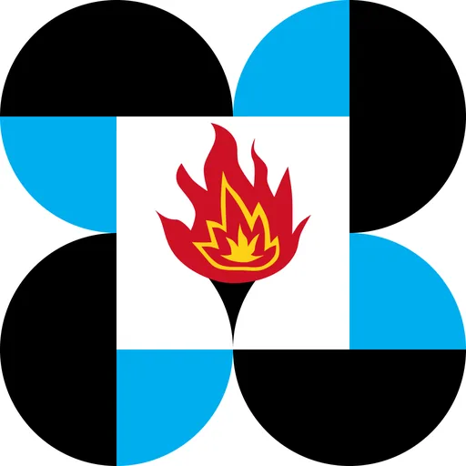

FabLab Eastern Visayas (PSHS-EVC)
Philippine Science HS – Eastern Visayas Campus · Region VIII
PSHS Eastern Visayas FabLab is a Shared Service Facility (SSF) funded by the Department of Trade and Industry (DTI), established at the Philippine Science High School Eastern Visayas Campus (PSHS-EVC) in Palo, Leyte. Located on the Ground Floor of the Crest Building at PSHS-EVC, Pawing, Palo, Leyte, it serves as a regional hub for digital fabrication, ideation, and innovation for MSMEs, students, makers, and researchers in Eastern Visayas.
- Category
- Fabrication Laboratory (FabLab)
- Host institution
- Philippine Science HS – Eastern Visayas Campus
- City
- Palo, Leyte
- Region
- Region VIII
- Operating status
- Operating
About the Center
The FabLab is embedded within PSHS-EVC's research and development ecosystem — R&D is integral to the PSHS curricula, and the school maintains dedicated human resources conducting surveys and studies aligned with MSME needs across the region. This academic-industry integration positions the FabLab not just as an equipment room but as a structured innovation pipeline, bridging education and industry to help local entrepreneurs produce globally competitive products.
Programs & Services
Equipment and fabrication capabilities (fablabs.ioregistered):
- Epilog Fusion M2 40 — High-powered laser cutter and engraver for wood, acrylic, fabric, and other materials
- Roland MDX-50 — High-precision CNC milling machine for intricate, fine-detail subtractive manufacturing
- Raise 3D N1 — Professional-grade 3D printer for detailed prototyping and product modeling
- 3D Printing — Rapid prototyping from digital designs for MSMEs and student projects
- Laser Cutting / Engraving — Precision material cutting and surface engraving
- CNC Milling / Precision Milling — Computer-controlled fabrication of complex components
- Vinyl Cutting — Custom decals, labels, packaging elements, and signage
Programs offered:
- Open-access fabrication services for MSMEs, individuals, schools, and companies across Eastern Visayas
- Workshops and seminars on new technological advancements to upskill entrepreneurs and strengthen local industry capacity
- MSME product development support — translating business ideas into fabricated prototypes ready for market
- Student innovation programs aligned with PSHS-EVC’s R&D curricula and local industry survey findings
- Collaboration bridging PSHS-EVC’s academic resources with local and national industry partners
FabLab Manager: Cyrill Tapales (ctapales@evc.pshs.edu.ph · 09507528822)
Contact
Sources & references
Details are drawn from public records and the sources above, July 2026.
Startupreneur Innovation Hub · synced from the Notion catalog (July 2026) · status: published.